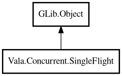

SingleFlight
Object Hierarchy:

Description:
public class SingleFlight : Object
Suppresses duplicate concurrent work for the same key.
SingleFlight ensures only one execution per key is running at a time. Concurrent callers for the same key wait and receive the same
result.
Example:
var group = new SingleFlight ();
int? value = group.@do<int> ("user:42", () => {
return 42;
});
assert (value == 42);
Content:
Creation methods:
Methods:
- public T @do<T> (string key, SingleFlightFunc<T> fn)
Executes the function once for a key and shares the result.
- public void clear ()
Removes all in-flight keys from tracking.
- public Future<T> doFuture<T> (string key, owned SingleFlightFunc<T> fn)
Asynchronous version of
do.
- public void forget (string key)
Forgets in-flight state for key.
- public bool hasInFlight (string key)
Returns whether key is currently in flight.
- public int inFlightCount ()
Returns current number of in-flight keys.
Inherited Members:
All known members inherited from class GLib.Object
- @get
- @new
- @ref
- @set
- add_toggle_ref
- add_weak_pointer
- bind_property
- connect
- constructed
- disconnect
- dispose
- dup_data
- dup_qdata
- force_floating
- freeze_notify
- get_class
- get_data
- get_property
- get_qdata
- get_type
- getv
- interface_find_property
- interface_install_property
- interface_list_properties
- is_floating
- new_valist
- new_with_properties
- newv
- notify
- notify_property
- ref_count
- ref_sink
- remove_toggle_ref
- remove_weak_pointer
- replace_data
- replace_qdata
- set_data
- set_data_full
- set_property
- set_qdata
- set_qdata_full
- set_valist
- setv
- steal_data
- steal_qdata
- thaw_notify
- unref
- watch_closure
- weak_ref
- weak_unref